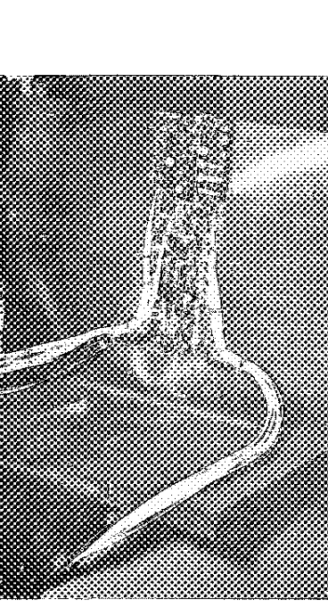
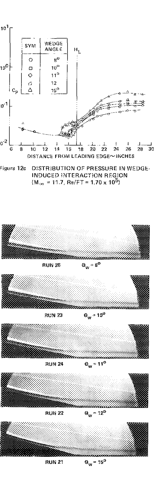
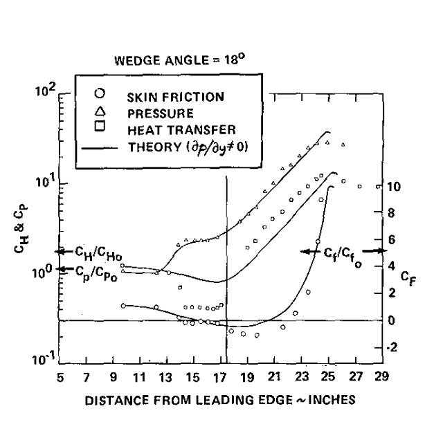
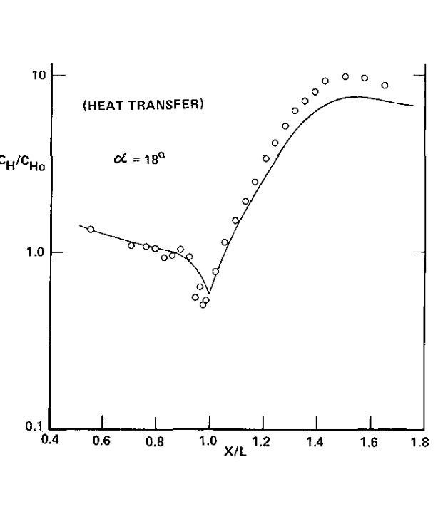

01中文摘要
给出高超声速激波-层流边界层干扰的详细实验研究。在M=11.5、15.6、18.9，Re=3×10⁵～8×10⁶范围内测量摩阻、热流和压力，考察外部激波与平板-楔压缩面诱导的附着、起始分离和充分分离区。给出基于本文及以往数据的附着与分离干扰特性关联。重要发现是：两种干扰的特性很相似，但在高马赫数、强冷却流动中，外部激波比压缩拐角更容易诱导分离；充分分离的平台压力和峰值热流对分离机制不敏感。实验还与Holden积分方法（含∂p/∂η）及Hung-MacCormack时间相关Navier-Stokes解比较。
02阅读说明
实验研究为主、附积分法与时间推进NS对比的会议论文（AIAA 78-1169，Calspan，1978，22页扫描件）。全文可读但OCR质量差：表I数字、公式与部分图注有错位/乱码；表I已回读PDF第11页逐项核对，正文关键百分比与图号按可辨内容记录。图件清单16项，部分图号与图注重叠（如清单“图1”实为热流分布图）。信息完整度中等偏上，定量结论多来自图与表；页码均指bundle的PDF页。 文章类型：期刊
03一句话核心与三句话摘要
测量马赫11.7–18.9强冷却壁楔致与激波致层流分离，发现高马赫外激波更易诱导分离，NS低估完全分离长度。
- 自由干扰/积分模型在高马赫、强冷却壁层流分离中失效，且缺乏足够细致的摩阻、热流、压力数据来检验时间推进NS解。 AI概括
- 在Calspan 48英寸激波风洞以M≈11.7、15.6、18.9测量平板-楔与激波发生器模型的壁面摩阻、热流和压力，发现χ_L>5时外激波诱导初始分离所需压升明显低于楔致压缩。 AI概括
- 两类干扰的完全分离区平台压力、特性分布和峰值热流相近，NS对附着/轻度分离吻合良好，但对完全分离区只给出实验长度的约0.6。 AI概括
04核心内容清单
| 要点 | 类型 | 重要性 | 原文依据 | 属性 |
|---|---|---|---|---|
| 研究缺口：自由干扰/积分模型在高马赫强冷却层流分离中失效，super-subcritical jump缺乏实验对应，且缺少检验NS的详细数据。 | 研究动机 | A | PDF p2–3 §I–II | 原文明确 |
| 实验在Calspan 48英寸激波风洞完成，M≈11.7、15.6、18.9，采用tailored-interface运行，低Mi试验时间可超过25 ms。 | 实验条件 | A | PDF p3–4 §III | 原文明确 |
| 两类模型：平板-楔压缩面与激波发生器+平板，宽1/1.5/2 ft，测点距前缘6–30 in。 | 几何 | A | PDF p5 §Experimental Program，图2–4 | 原文明确 |
| 摩阻是判定初始分离的主要测量量；压力拐点会明显高估初始分离压升，热流由尖峰变圆钝的判据仅在M<12有效。 | 测量/判据 | A | PDF p4、p7 §Incipient Separation | 原文明确 |
| M11.7下接近初始分离时，拐点附近热流与摩阻突然下降、压力上升；分离后热流由cusp变圆钝、压力出现拐点；M18.9下这些特征要到完全分离才明显。 | 现象 | A | PDF p6 §Distribution of Properties | 原文明确 |
| χ_L>5时，外激波诱导初始分离所需压升显著低于楔致压缩，说明自由干扰概念在高马赫强冷却流中可能不准确。 | 核心结果 | A | PDF p7 §Comparison Between Wedge- and Shock-Induced，图19 | 原文明确 |
| 完全分离区：楔致与激波致的平台压力几乎相同，特性分布相似，相同总压升下再附区峰值热流相当。 | 相似性 | A | PDF p7、p9 §Comparison/§Conclusions | 原文明确 |
| 压力：楔致流用切楔关系，激波致流用激波极线；实验与平板干扰理论+切楔/极线计算吻合良好（图10）。 | 理论对比 | B | PDF p6，图9–10 | 原文明确 |
| 峰值热流用(p_max/p0)^n压力幂律关联散布大；基于Cheng解的方法对附着/轻分离流预测较好（图11）。 | 关联式 | B | PDF p6–7，图11 | 原文明确 |
| NS：附着流极好、轻度分离良好、完全分离区长度仅约实验的0.6，但平台与再附区水平预测较好。 | 数值验证 | A | PDF p8，图23–25 | 原文明确 |
| 含∂p/∂y的积分边界层法给出更明确的平台压力与更陡的再附压缩，图22与实验吻合，初始分离预测也出乎意料地好。 | 理论对比 | A | PDF p8–9，图18、图22 | 原文明确 |
| 流动建立：无黏流约1 ms、稳定分离区约2 ms；NS给出约1.2–1.3 ms（200步、约7个平板流动长度）。 | 非定常/验证 | B | PDF p5、p8 | 原文明确 |
05引言：研究问题与领域缺口
高马赫、低雷诺数（M>10、Re<10^6）下会出现层流激波-边界层干扰与完全层流分离，这类流动在航天飞机和高空高β再入体上范围大且难以用低空湍流干扰的工程方法处理。层流分离不能用“背公式”式估算，过去十年发展了积分边界层方程、积分NS与时间推进NS等方法。自由干扰模型（Crocco–Lees、Glick、Honda、Reeves、Holden等）在超音速绝热壁取得较好结果，但Holden把能量方程加入后，M>11的强冷却流出现“超临界响应”，需要人为引入super-subcritical jump，而M10–20的详细实验表明该跳跃在回流区没有对应结构。Hung–MacCormack的时间推进NS被视为当时最有效的层流分离预测方法。论文有两个目标：一是弄清自由干扰模型在高马赫强冷却分离流中为何失效，以修改/扩展简单模型；二是提供足够详细的测量以准确检验时间推进NS解，并考察差分格式与网格对解的影响（PDF p2–3，§I–II）。
06流动条件与几何构型
| 项目 | 数值/描述 | 依据 | 备注 |
|---|---|---|---|
| 风洞 | Calspan 48英寸激波风洞，双膜破膜驱动，tailored-interface运行；低入射激波马赫数下试验时间>25 ms | PDF p3–4 §III | 试验气体种类在表I中未列出 |
| 模型1 | 平板-楔压缩面；楔角约11.7°–18°（图13–14的runs含15°、13°、14°、17.5°、18°） | PDF p5、p15–16，图2、图13–14 | 不同Mach下改变楔角以获得附着/初始分离/完全分离 |
| 模型2 | 激波发生器+平板；发生器角约3.0°–7.5°（图16–17的runs含4.0°、5.5°、7.5°） | PDF p5、p17–18，图2、图16–17 | |
| 模型宽度/测点 | 宽度1、1.5、2 ft；测点距前缘6–30 in；M18.9时激波发生器长度超过2 ft | PDF p5 §Experimental Program | 用加宽模型、端板与侧挡板检验二维性 |
| 工况A（M≈11.7） | 入射激波Mach 3.500；p0=528.7 psia；H0=1.972×10^7 ft²/s²；T0=2588 °R；M∞=11.60；U∞=6172 ft/s；T∞=115.2 °R；p∞=3.730×10^-3 psia；q∞=0.3580 psia；ρ∞=2.714×10^-5 slug/ft³；μ∞=9.771×10^-8 slug/(ft·s)；Re/ft=1.734×10^6；皮托压=0.9063 psia；T*=909.3 °R；μ*=5.616×10^-7；√C*=0.8572；Hw=3.213×10^6 ft²/s²；Tw=535.0 °R；试验段压力=1.354×10^-4 psia；Re_stag=1199 /ft | PDF p11 表I 列A | |
| 工况B（M≈15.6） | 入射激波Mach 3.844；p0=1285 psia；H0=2.321×10^7 ft²/s²；T0=3444 °R；M∞=15.56；U∞=6745 ft/s；T∞=181.8 °R；p∞=1.235×10^-3 psia；q∞=0.2095 psia；ρ∞=1.326×10^-5 slug/ft³；μ∞=6.576×10^-8 slug/(ft·s)；Re/ft=1.806×10^6；皮托压=0.3903 psia；T*=736.1 °R；μ*=6.006×10^-7；√C*=0.8443；Hw=3.213×10^6 ft²/s²；Tw=535.0 °R；试验段压力=1.931×10^-4 psia；Re_stag=501.0 /ft | PDF p11 表I 列B | |
| 工况C（M≈18.9） | 入射激波Mach 4.238；p0=4212 psia；H0=2.794×10^7 ft²/s²；T0=4045 °R；M∞=18.86；U∞=7428 ft/s；T∞=64.45 °R；p∞=1.020×10^-3 psia；q∞=0.2543 psia；ρ∞=1.328×10^-5 slug/ft³；μ∞=5.318×10^-8 slug/(ft·s)；Re/ft=1.521×10^6；皮托压=0.4750 psia；T*=1146 °R；μ*=6.551×10^-7；√C*=0.8246；Hw=3.231×10^6 ft²/s²；Tw=538.0 °R；试验段压力=2.321×10^-4 psia；Re_stag=699.1 /ft | PDF p11 表I 列C | |
| 壁面热条件 | 强冷却壁：Tw≈535–538 °R，而T0=2588–4045 °R；Hw≈3.21–3.23×10^6 ft²/s² | PDF p11 表I | Hw/H0≈0.163、0.138、0.116（由表I数值计算，AI推断） |
| 雷诺数口径 | 摘要称Re=3×10^5–8×10^5；表I给出Re/ft=1.521×10^6–1.806×10^6 | PDF p2 摘要；PDF p11 表I | 两处口径/数值不一致，文中未解释参考长度 |
| 名义Mach数与表I差异 | 正文/标题多用11.7、15.6、18.9；表I为11.60、15.56、18.86；摘要另写11.5；结论写12–20 | PDF p2、p5、p9、p11 | 原文自身不一致，保留原值 |
| 二维性判据 | 模型加宽或加端板后中心线特性无显著变化；1 ft模型加侧挡板会增大分离区，1.5/2 ft加挡板无可测影响 | PDF p5 §Finite Span Effects | |
| 流动建立时间 | 无黏流约1 ms，稳定分离区约2 ms（另处称测量约1.7 ms）；NS约1.2–1.3 ms | PDF p5 §Flow Establishment；PDF p8 |
07核心现象与关键参数
| 参数 | 定义 | 数值 | 关系/说明 | 依据 |
|---|---|---|---|---|
| M∞ | 自由来流马赫数（表I） | 11.60 / 15.56 / 18.86（名义11.7 / 15.6 / 18.9） | PDF p11 表I；PDF p2 摘要 | |
| Re/ft | 单位英尺雷诺数 | 1.734×10^6 / 1.806×10^6 / 1.521×10^6 | PDF p11 表I | |
| Hw/H0 | 壁面焓与总焓之比，衡量壁面冷却程度 | ≈0.163 / 0.138 / 0.116 | 由PDF p11 表I计算（AI推断） | |
| Tw/T0 | 壁温与总温之比 | ≈0.207 / 0.156 / 0.133 | 由PDF p11 表I计算（AI推断） | |
| χ_L | 黏性干扰参数（文中与Me、χ_L并列为相似参数） | 初始分离差异在χ_L>5时显著；具体数值未列表 | PDF p7；图18–19 | |
| 初始分离压升 | 诱导初始分离所需压力上升（楔角或激波强度） | χ_L>5时激波致显著低于楔致；具体数值仅以图19给出 | PDF p7，图19 | |
| 平台压力 | 分离区平台压力与来流/楔后压力之比 | 两类干扰几乎相同；具体数值未在正文列表 | PDF p7、p9，图19 | |
| NS/实验分离区长度比 | 完全分离流中NS预测分离区长度与实验之比 | 约0.6 | PDF p8，图25 | |
| 峰值热流关联 | (q_peak/q0)=(p_max/p0)^n，n由实验确定 | 散布大，未给出统一n；附着/轻分离可用Cheng解 | PDF p6–7，图11 | |
| 流动建立时间 | 从启动到稳定分离区建立的时间 | 实验约2 ms（另处1.7 ms）；NS约1.2–1.3 ms | PDF p5、p8 | |
| 楔角/激波发生器角 | 改变干扰强度的几何参数 | 楔约11.7°–18°；发生器约3°–7.5° | PDF p5、p15–18，图13–17 | |
| 测点范围 | 距前缘的流向位置 | 6–30 in | PDF p14–22 图12–17横坐标 |
08方法与数据
实验在Calspan 48英寸激波风洞完成，采用tailored-interface运行，低入射激波马赫数下试验时间可超过25 ms（PDF p3–4）。模型有两种：平板-楔压缩面（楔角随工况变化，约11.7°–18°）与激波发生器+平板（发生器角约3°–7.5°），模型宽度1、1.5、2 ft，测点位于距前缘6–30 in。测量以壁面摩阻为主（压电陶瓷梁支撑膜片、带加速度补偿与FET阻抗变换），热流用非导电模型上的薄膜电阻温度计（半无限板理论、模拟网络换算，频响至1 MHz），压力用PZT传感器（约15 kHz）与PCB高频传感器（约30 kHz），并配纹影。通过加宽模型/端板与侧挡板检验二维性：1 ft模型加侧挡板会增大分离区，1.5与2 ft模型加挡板无可测影响，中心线分布均匀。流动建立时间用高频测量确定：无黏流约1 ms，稳定分离区约2 ms；Hung–MacCormack解给出约200时间步/1.3 ms（PDF p4–5）。理论对比包括Holden含∂p/∂y的积分边界层方程组（五个非线性常微分方程，剖面参数a、b、c、δ*、Me）与Hung–MacCormack显式时间推进NS（固定网格、来流方向等距、横向变距，计算域限于干扰区，约100步后外流达到稳定）（PDF p8–9）。
| 项目 | 内容 | 依据 | 备注 |
|---|---|---|---|
| 实验设施 | Calspan 48英寸激波风洞；双膜、反射激波加热、tailored-interface；低Mi试验时间>25 ms | PDF p3–4 §III | |
| 摩阻测量 | 膜片由两根压电陶瓷梁支撑，第三梁作加速度补偿；FET阻抗变换；用于低摩阻分离区与高摩阻湍流干扰区 | PDF p4 §The Skin Friction Gage | |
| 热流测量 | 非导电模型上的薄膜电阻温度计（pyrex按钮或随形嵌件），半无限板理论+模拟网络，频响至1 MHz；避免横向导热 | PDF p4 §Heat Transfer Instrumentation | |
| 压力测量 | PZT传感器（随管可达15 kHz）测平均压力；PCB高频传感器（30 kHz）测不稳定；铝化Mylar隔热屏障 | PDF p4–5 §Surface and Flow Field Pressure Measurements | |
| 流场显示 | 纹影照片（图12d、13d、14f、15d–17d） | PDF p15–18 | |
| 二维性/端部效应控制 | 模型宽1、1.5、2 ft；加端板与侧挡板；以中心线特性不随展向配置显著变化为判据 | PDF p5 §Finite Span Effects | |
| 初始分离判据 | 以壁面摩阻为零为主；压力拐点、热流cusp-to-rounded为辅助并检验其适用Mach数 | PDF p4、p7 | |
| 积分边界层法 | Holden含∂p/∂y的积分方程组，化为五个联立非线性常微分方程；独立变量为δ*、Me、速度/焓/压力剖面参数a、b、c；采用Falkner–Skan与多项式剖面 | PDF p8–9 §Comparisons With the Integral Solutions | |
| NS方法 | Hung–MacCormack显式有限差分时间推进NS；来流方向等距、横向变距；计算域限于干扰区；约100步外流稳定，约1.2 ms建立分离流 | PDF p8 | |
| 验证方式 | 与实验的摩阻、压力、热流分布逐工况对比；附着（图23）、轻分离（图24）、完全分离（图25）；积分法对比图22 | PDF p8–9 | |
| 不确定度/重复性 | 文中未给出系统不确定度或重复性统计；仅讨论横向导热、端部效应与传感器过热等定性误差源 | PDF p4–5 |
09核心推导与公式
原文未给出从守恒律出发的完整解析推导；以下仅列出材料中可核对的定义或建模链，不补写教科书推导。
本文不以公式推导为主线：理论部分直接采用Holden含∂p/∂y的积分边界层方程组（五个非线性常微分方程）和Hung–MacCormack时间推进NS，作为与实验对比的工具；原文只说明方程形式、剖面参数与求解流程，未展开从控制方程到积分方程的逐步推导，也未给出可辨识的完整公式。
关键假设
- 二维、定常层流分离流动（实验以二维性判据控制端部效应）
- 边界层积分法采用Falkner–Skan/多项式型剖面，以δ*、Me、a、b、c为独立变量
- NS计算域限于相互作用区，来流方向等距、横向变距；外流约100步达到稳定
- 壁面强冷却，Tw近似均匀（535–538 °R）
- 完全气体、层流边界层，无湍流模型
适用边界：原文未给出积分方程的逐项推导、离散格式细节、网格无关性或湍流/转捩处理；扫描件公式文本层严重乱码（如PDF p20的剖面参数式），受限于材料，无法逐式核对。因此本记录不补写教科书推导。
10结果：主要发现与关键证据
在M11.7，随楔角增大接近初始分离，平板靠近拐点的热流与摩阻突然下降、压力升高；发生分离时热流由尖峰（cusp）变为圆钝形，压力出现拐点。M18.9下同样过程不明显：摩阻下降仍可见，但热流下降/压力上升不如M11.7显著，直到完全分离才出现明显压力拐点，说明基于压力拐点或热流形状的分离判据在高马赫需修正（PDF p6）。压力上升：楔致流用切楔关系描述良好，激波致流需用激波极线追踪前缘激波与入射激波相互作用后的压力（图9–10）；实验与Bertram–Blackstock平板干扰理论+切楔计算吻合良好（PDF p6）。初始分离：图19给出楔致与激波致的初始分离压升，χ_L>5时外激波诱导初始分离所需压升显著低于压缩拐角（PDF p7）。完全分离区：两类干扰的分离/再附区特性分布相似，平台压力几乎相同，相同总压升下再附区峰值热流相当，说明可用自由干扰过程描述，即使分离区长度与边界层厚度同量级（PDF p7、p9）。热流峰值：用(q_peak/q0)=(p_max/p0)^n的简单压力幂律关联散布很大；对附着或轻分离流，基于Cheng的解可较准确预测最大热流（图11，PDF p7）。与NS对比：附着流（图23）预测与实验极好；轻度分离（图24）热流尖峰与摩阻分布预测良好；完全分离（图25）NS显著低估分离区尺寸，约为实验的0.6，但平台与再附区分布形式和绝对水平预测较好（PDF p8）。积分法：加入∂p/∂y后平台压力更明确、再附压缩更陡，图22的摩阻/压力/热流与实验吻合；用该法算出的初始分离条件与实验“surprisingly good”，尽管作者对高马赫积分法有效性仍有疑问（PDF p9）。
| 发现 | 证据 | 证据类型 | 强度 | 位置 | 属性 |
|---|---|---|---|---|---|
| χ_L>5时，外激波诱导初始分离所需压升显著低于楔致压缩拐角，说明自由干扰概念在高马赫强冷却流中可能不准确。 | 图19把两类干扰的初始分离压升随χ_L作图，激波致曲线明显低于楔致。 | 定量对比 | 强 | PDF p7，图19 | 原文明确 |
| 高马赫下常规分离判据失效：压力拐点会显著高估初始分离压升；热流由cusp变圆钝的判据仅在M<12有效，M18.9要到完全分离才出现明显压力拐点。 | 正文对M11.7与M18.9热流/压力分布演变的对比，以及摩阻为主判据的论述。 | 判据评估 | 强 | PDF p6–7 §Distribution/§Incipient Separation | 原文明确 |
| 完全分离区的平台压力、特性分布与峰值热流在楔致与激波致干扰间近似一致，分离可用自由干扰过程描述，即使分离区长度与边界层厚度同量级。 | 图19平台压力对比；正文对分布形式与再附峰值热流的比较。 | 相似性 | 强 | PDF p7、p9 | 原文明确 |
| 时间推进NS对附着流预测极好，对轻度分离流良好，但完全分离区长度仅约实验的0.6，尽管平台与再附区水平预测较好。 | 图23（附着）、图24（轻分离）、图25（完全分离）的摩阻/压力/热流对比。 | 数值验证 | 强 | PDF p8，图23–25 | 原文明确 |
| 含∂p/∂y的积分边界层法能给出更明确的平台压力和更陡的再附压缩，图22与实验吻合，初始分离条件预测也出乎意料地好。 | 图22完全分离楔致干扰的积分解与实验对比；图18初始分离预测。 | 理论对比 | 中 | PDF p8–9，图18、图22 | 原文明确 |
| 峰值热流的简单压力幂律关联散布很大，不宜作为通用预测；基于Cheng解的方法对附着/轻分离流较好。 | 图11热流关联及图11b预测对比。 | 关联式评估 | 中 | PDF p6–7，图11 | 原文明确 |
| 流动建立：无黏流约1 ms、稳定分离区约2 ms；NS给出约1.2–1.3 ms（200步、约7个平板流动长度）。 | 图5d时间历程与正文；NS计算描述。 | 非定常特性 | 中 | PDF p5、p8 | 原文明确 |
| 展向/端部效应可通过1.5–2 ft宽模型与侧挡板控制；1 ft模型加挡板会增大分离区，说明窄模型端部效应显著。 | 不同模型宽度与挡板组合的中心线分布对比。 | 实验质量控制 | 中 | PDF p5 §Finite Span Effects | 原文明确 |
| 强冷却壁与高热流梯度使横向导热成为热流测量主要误差源，必须用非导电模型+薄膜计而非薄皮技术。 | §Heat Transfer Instrumentation对Hiers–Loubsky薄皮修正量与测量同量级的讨论。 | 测量方法 | 中 | PDF p4 | 原文明确 |
11机制解释与论证链
作者把楔致与激波致分离的共性归因于黏性-无黏干扰：分离区由边界层位移与外部压缩共同建立，平台压力由分离剪切层/回流区的动量平衡决定，因而与产生压缩的几何方式关系不大；相同总压升下再附压缩过程相似，峰值热流也相当。差异出现在初始分离阶段：外激波诱导时，前缘激波与入射激波相互作用改变局部压力与边界层状态，使达到初始分离所需压升在高χ_L下低于楔致压缩，这与自由干扰模型“分离仅由当地边界层状态决定”的假设冲突。作者进一步怀疑，把本质椭圆（存在 upstream influence）的流动用抛物线型积分方法处理，是模型在高马赫强冷却条件下失效的深层原因。NS在完全分离区低估长度，可能与时均/差分格式、网格及分离剪切层的非平衡有关，但原文未给出定论。
12讨论：结论、贡献与局限
作者把楔致与激波致干扰的相似性归因于分离/再附区由黏性-无黏干扰控制：平台压力几乎相同、峰值热流相当、特性分布形式一致，因此自由干扰概念在分离区长度与边界层厚度同量级时仍可描述分离。但两类干扰的初始分离压升在高χ_L下不同，外激波更易诱导分离，说明自由干扰模型在高马赫强冷却壁条件下可能不准确；作者怀疑把本质椭圆的问题用抛物线型积分方法处理是否合理。NS在完全分离区低估长度，作者认为需进一步细致对比以解决差异。实验方面，强冷却壁（Tw≈535–538 °R，Hw/H0约0.12–0.16）和厚边界层使侧向/端部效应、横向热传导成为主要误差源，需用宽模型、侧挡板和薄膜技术控制（PDF p5、p7–9）。
作者结论
在M≈11.7–18.9、强冷却壁的层流激波-边界层干扰中，作者用摩阻、热流、压力与纹影系统测量了附着、初始分离和完全分离流。主要结论：①M>12时楔致与激波致干扰的初始分离压升存在可测差异，χ_L>5时外激波更易诱导分离，自由干扰概念在高马赫强冷却流中可能不准确；②完全分离区的平台压力、分布形式与峰值热流对干扰产生方式不敏感，仍可用自由干扰过程描述；③含∂p/∂y的积分法能给出合理的平台压力与初始分离预测，尽管其抛物线假设受质疑；④Hung–MacCormack时间推进NS对附着/轻度分离流与实验吻合良好，但完全分离区长度仅约实验的0.6，需进一步研究。实验还给出了流动建立时间（约2 ms）与展向/端部效应控制方法。
主要贡献
- 提供了M≈11.7、15.6、18.9三工况下平板-楔与激波发生器两类干扰的摩阻、热流、压力与纹影同步测量，覆盖附着、初始分离与完全分离。
- 用摩阻为主判据重新标定了初始分离条件，指出压力拐点会高估初始分离、热流形状判据在高马赫失效。
- 发现并量化了高χ_L下外激波比楔致压缩更易诱导分离这一关键差异，直接质疑自由干扰模型的适用性。
- 证明完全分离区的平台压力、特性分布和峰值热流对干扰机制不敏感，为工程关联提供依据。
- 为时间推进NS与含∂p/∂y积分法提供了逐工况的验证数据，明确指出NS对完全分离区长度的系统性低估。
- 给出了强冷却壁、高热流梯度环境下薄膜热流/压电摩阻测量与展向效应控制的可复用实验方法。
局限与未解决问题
作者承认：积分法本质为抛物线型，用于存在上游影响的椭圆型分离流是否合理存疑；NS对完全分离区长度的低估未解决，需更细致对比；实验的二维性只能以“加宽/加挡板后中心线不变” pragmatic 判据保证。AI识别的局限：仅层流、二维、强冷却壁，M和Re范围有限；未给测量不确定度与重复性统计；表I与正文的Mach/Re口径不一致（11.5/11.7/11.60，Re 3×10^5–8×10^5 vs Re/ft≈1.5–1.8×10^6）；部分结论依赖读图，平台压力、初始分离压升无量值表；扫描件OCR使公式与部分图注不可靠；未讨论气体种类、化学/真实气体效应与壁面催化。
13对高速流动与工程的意义
对高超声速工程的意义：①控制面、进气道/隔离器等处层流分离的起始条件不能仅凭压力拐点判断，高马赫下应用摩阻或更可靠的判据，否则会高估所需压升、误判分离裕度；②外激波（如进气道唇口、控制面激波）比同强度楔致压缩更易诱发分离，布局时应把外部激波入射位置与边界层状态作为独立设计变量；③完全分离区的平台压力与峰值热流对干扰来源不敏感，可用统一的自由干扰/工程关联估算热载，但初始分离阶段必须区分机制；④为CFD可信度评估提供了明确基准：NS对附着/轻分离可用，对完全分离区长度会低估约40%，热防护与性能分析需留裕度。以上为AI推断，原文未直接给出型号或设计准则。
14核心图件




15可引用原文素材
| 原文短句 | 可支持的观点 | 位置 | 使用建议 |
|---|---|---|---|
| “externally generated shock” | 高马赫强冷却流中外激波比楔致压缩更易诱导分离。 | PDF p2 摘要 | 论文最核心结论的原文表述。 |
| “0.6 of the length” | NS对完全分离区长度的系统性低估。 | PDF p8 | 评价NS可信度时的定量短句。 |
| “skin friction gages” | 摩阻是判定初始分离的主要测量量。 | PDF p4 | 说明实验判据与方法。 |
| “considerable overestimation” | 压力拐点判据会高估初始分离压升。 | PDF p7 | 支持分离判据修正。 |
| “surprisingly good” | 含∂p/∂y积分法与实验初始分离预测吻合出乎意料地好。 | PDF p7 | 说明积分法仍具工程价值。 |
| “approximately 2 milliseconds” | 稳定分离区的建立时间。 | PDF p5 | 用于风洞试验时间与非定常分析。 |
| “no significant changes” | 加宽模型/加端板后中心线特性不变，作为二维性判据。 | PDF p5 | 说明实验二维性控制。 |
| “halfway up the compression” | 再附点位于再附压缩升压过程约一半处，热流峰值在压缩结束。 | PDF p9 | 描述分离/再附区结构。 |
16最终核验
| 核验项 | 结论 |
|---|---|
| 仅基于全文 | 是。仅使用bundle全文、图注与PDF第11页表I核对；未引入外部文献、数据或教科书公式。 |
| A 级要点有依据 | 是。A级要点均有PDF页、章节、图号或表I支撑；关键百分比（0.6、χ_L>5）直接来自原文。 |
| 属性标注 | 是。three_sentence、core_points、findings及部分conditions备注均标注原文明确/AI概括/AI推断；Hw/H0、Tw/T0为计算值并注明AI推断。 |
| 覆盖范围 | bundle共1346行，已从PAGE 1读到PAGE 22（EOF）；正文、表I与图注均覆盖；表I回读PDF第11页。 |
| 无编造 | 是。未编造页码、图号、公式或数据；平台压力、初始分离压升等图读量明确写“具体数值未列表/仅以图给出”；OCR不确定处注明。 |
需回原文确认
- 摘要Re=3×10^5–8×10^5与表I Re/ft≈1.5–1.8×10^6的口径差异如何解释？参考长度是模型长度、英寸还是其他？
- 图19中初始分离压升与平台压力的具体数值未列表，能否从原始数据表恢复以支持定量设计？
- 外激波比楔致更易诱导分离的机制中，前缘激波与入射激波相互作用、局部Mach数下降、边界层外缘熵层各占多大比重？原文未分解。
- NS低估完全分离区长度至0.6，是网格/差分格式、来流湍流度、壁面温度还是二维假设造成？原文只呼吁进一步对比。
- 强冷却壁（Tw/T0≈0.13–0.21）下壁面催化、真实气体效应是否影响热流与分离？表I未列气体种类，正文未讨论。
- 测量不确定度与重复性未给出，尤其薄膜热流计在高峰值梯度下的横向导热修正量有多大？
- 结论写“Mach numbers from 12 to 20”，而实验/表I为11.6–18.9，是否存在外推？
17关联文献
依据标签、板块、构型与作者脉络自动关联，可据此追踪同一问题的前序与后续工作。
18引用格式
选择期刊风格后复制；出处保留原刊名。BibTeX 可直接用于 LaTeX。
引用格式
Holden, M. 1978 A study of flow separation in regions of shock wave-boundary layer interaction in hypersonic flow. 11th Fluid and PlasmaDynamics Conference. https://doi.org/10.2514/6.1978-1169
PDF上传 PDF 并更新本页
本页缺少全文、摘要或图件时，可在浏览器本地补入 PDF。解析完全在本机完成，不上传网络；完成后会更新本页的 PDF 打开链接、原摘要、IMRaD 机器抽取、关键句与含图页面。复杂的公式语义与中文深度解读仍以原文和既有精读记录为准。
Zotero 笔记摘录
分离区长度随 Re 增大而增大、随 Ma 增大而减小 ；固定楔角时 Ma 增大/单位 Re 减小使分离长度减小 楔角/激波强度增大使分离增大；初分离需阈值 高 Ma、强冷却流中， 外部激波比压缩拐角更容易诱导分离 ；同压升时外部激波上游影响更大。但 well-separated 的 plateau 压力和峰值热流对分离机制不敏感